Watarai, Mie: things to do, food and stays
Watarai · Mie
Watarai
Highlighted on the Mie map.
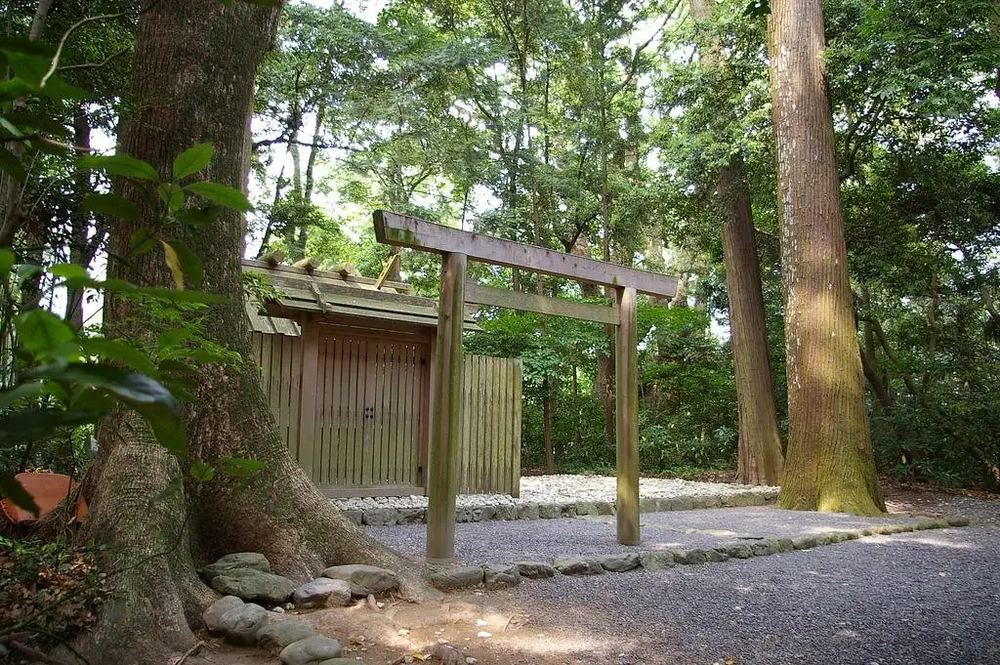
Stay
クラスベッソ伊勢

Kurasubesso Ise
Dining
うなぎ 膳
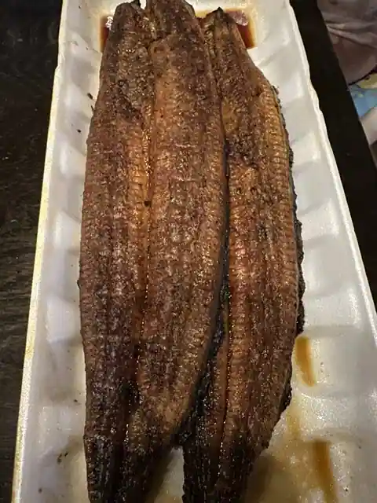
Unagi Zen
鈴木水産
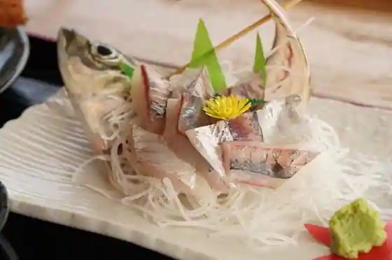
Suzuki Suisan
鰻はましん
Unagi Hamashin
Faveur
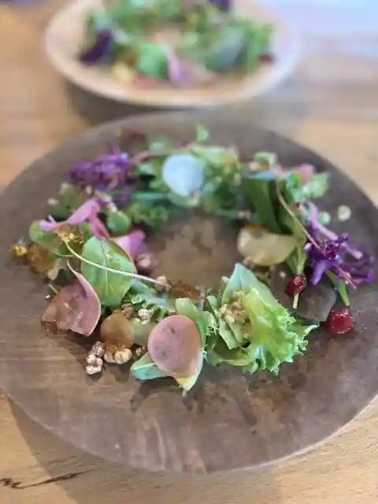
Faveur
お菓子のじかん ルシエン
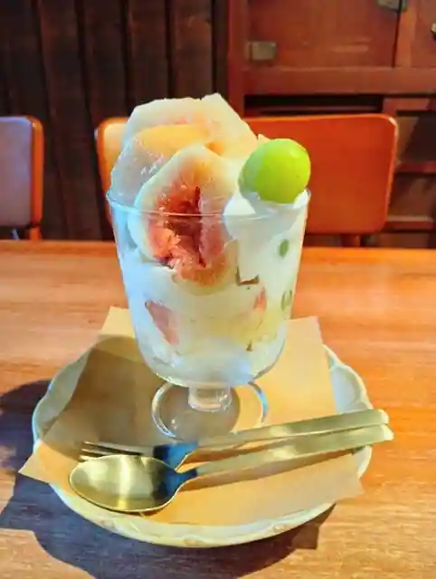
O Kashi Nojikan Rushien
四十三番食堂
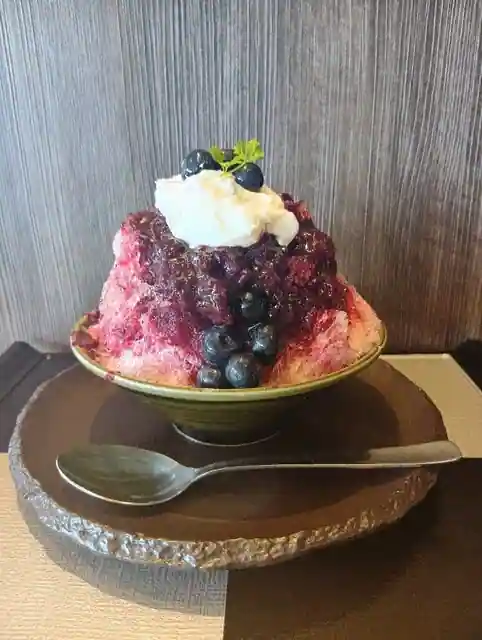
Shiju Sanban Shokudo
虹橋食堂 大乃木坂店
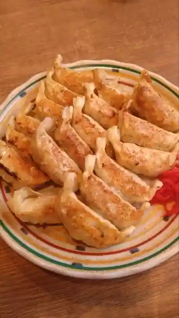
Kokyo Shokudo Dai Nogizaka
焼肉おどり場 本店
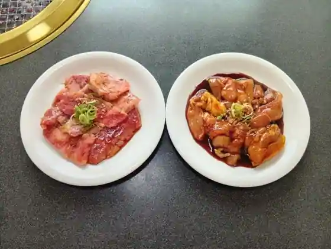
Yakiniku Odori Ba Hon
誠のうどん
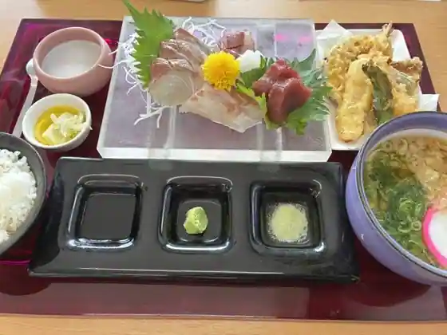
Makotono Udon
CLIMAT
CLIMAT
田園
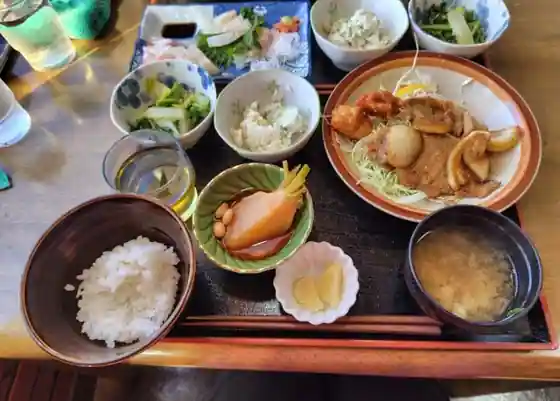
Den'En
マミンカ
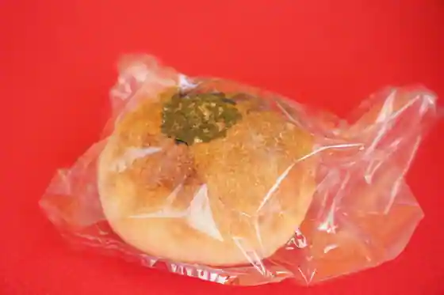
Maminka
又喜亭
Mataki Tei
鳥源 度会店
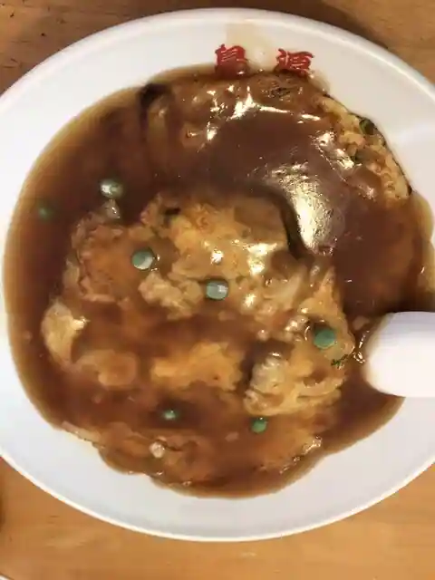
Tori Gen Watarai
fukui coffee
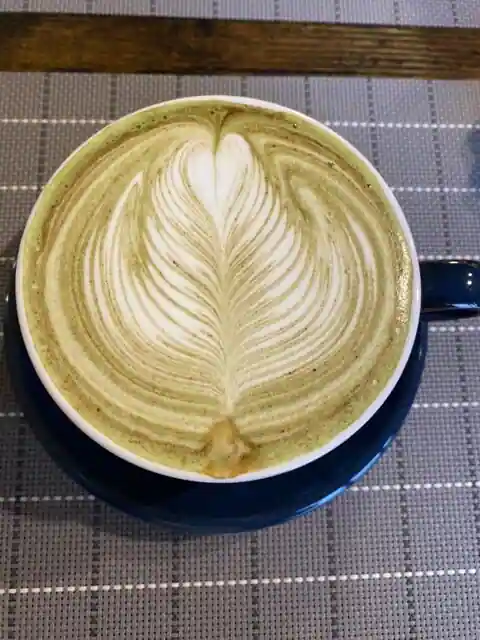
fukui coffee
ひょうたん
Hyotan
福°だんご
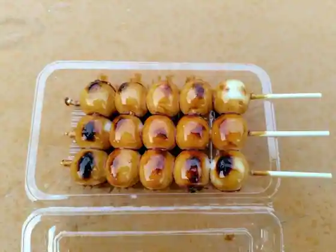
Fuku. Dango
はせ川
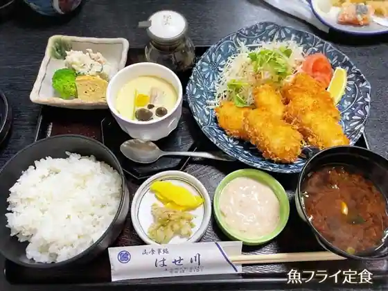
Hase Kawa
Half Note
Half Note
こじか堂
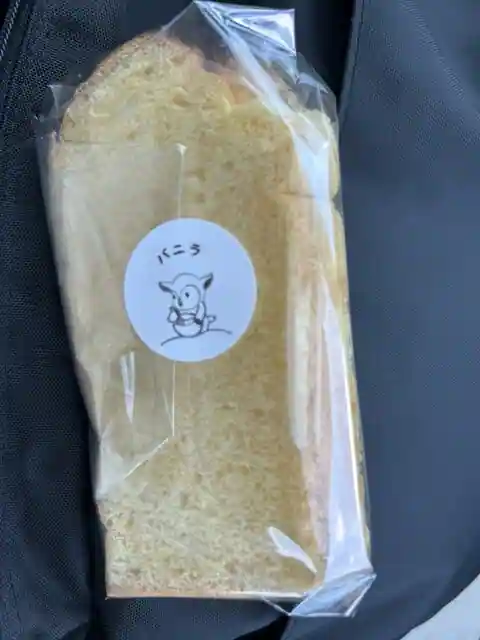
Kojika Do
いらっ茶いわたらい
Iratsu Cha Iwatarai
ツモリ
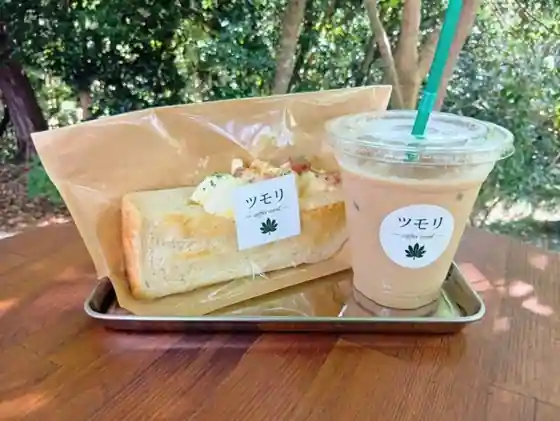
Tsumori
あんふぁん
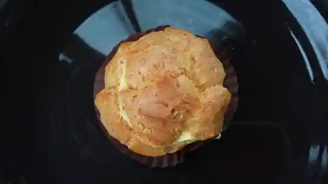
Anfan
Sights
Miya Riba Watarai Park Yusui Puru Kagami
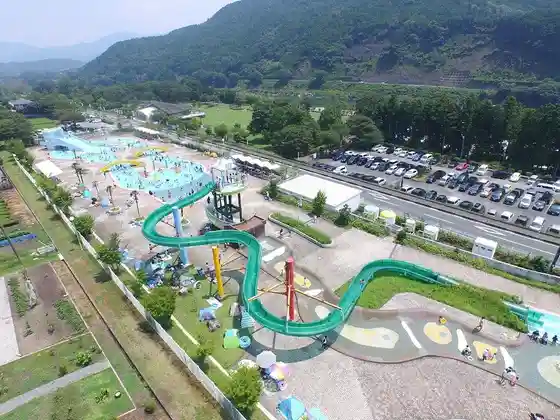
Miya Riba Watarai Park
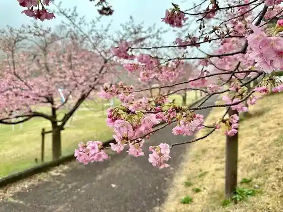
Ise Miyagawa Famiriirafuteingu
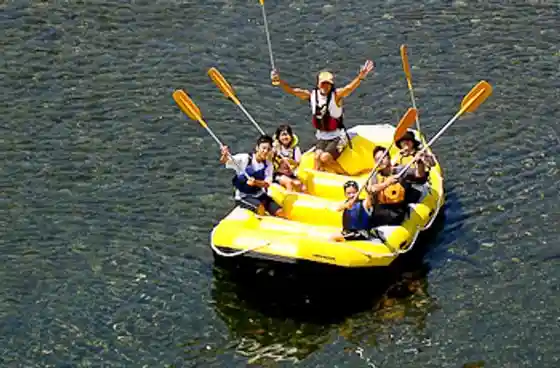
Fureai Hiroba Kuriyama
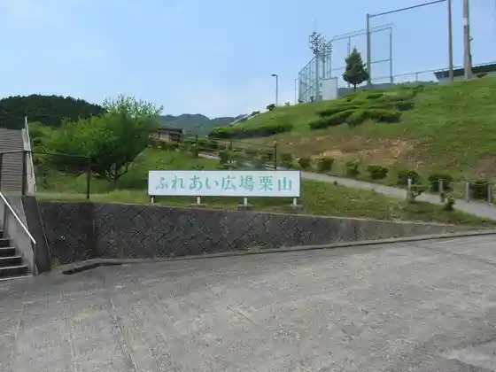
Watarai Furusato Rekishikan
Renge Tera
Shoboji
Otome Iwa
Kyu Gu Miyako Hime Shrine (Kugutsuhimejinja)
Ushi Kusayama
Kuni Soku Yama
Kuni Soku Tera
Shishigagaku
Nansei Shin Shikoku Yasohachigatokoro
Medaki
Miyagawa Ichinose Kawa
Nichi no Shutsu Forest